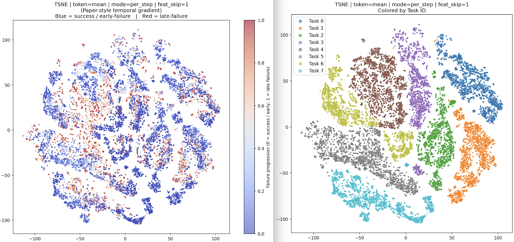
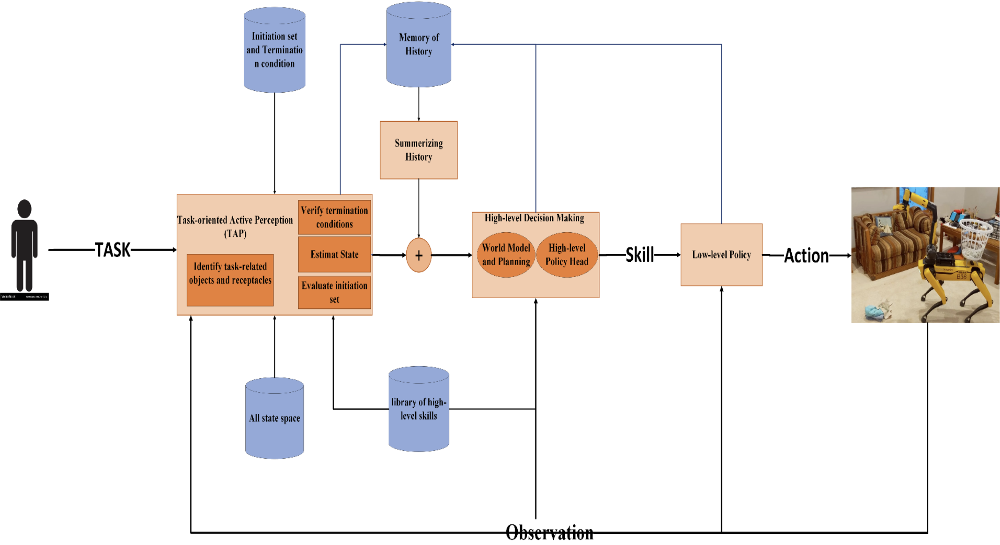
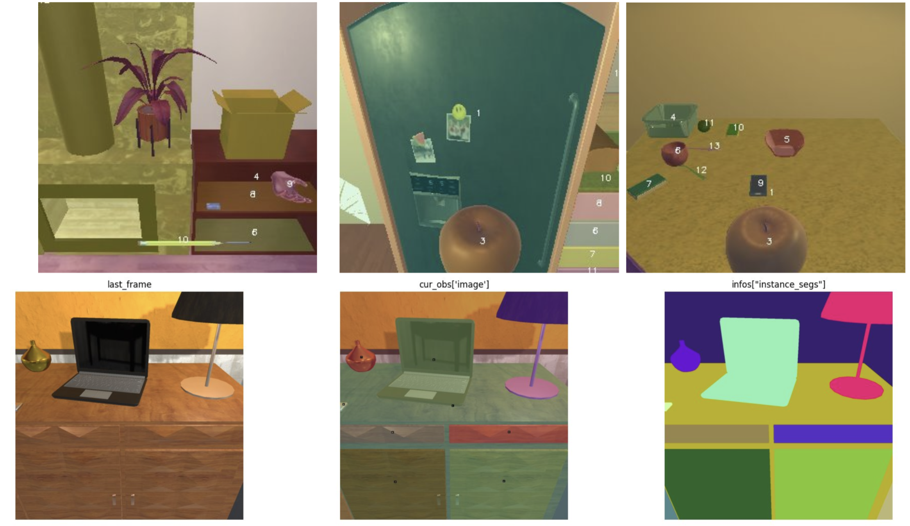
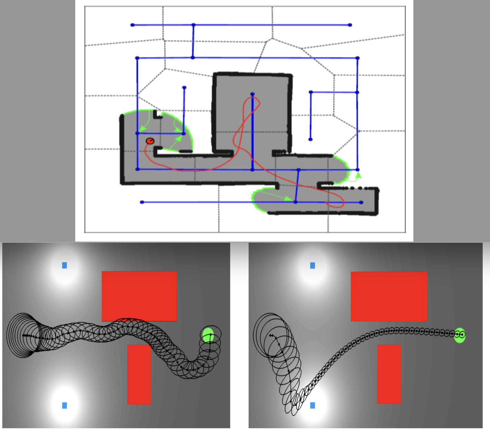

I am a Robotics AI researcher at
the Helping Hands Lab
at Northeastern University, advised by
Prof. Rob Platt.
My research focuses on Machine Learning and Robot Learning, with an emphasis on imitation learning,
reinforcement learning, geometric deep learning, and VLAs. I am particularly interested in improving
generalization, sim-to-real transfer, sample efficiency, and safe and robust learning.
My research goal is to enable robots and embodied intelligence systems to perform complex long-horizon tasks in real-world environments.
To achieve this, I design hierarchical frameworks that combine high-level decision-making, planning, and reasoning with low-level control and action execution.
Research
-
VLAs:
Improving VLA generalization and sample efficiency by integrating geometric reasoning with semantic understanding of the environment.
-
Geometric Deep Learning:
Incorporating geometric inductive biases into robot learning models, including geometry-aware representation learning,
structured policy learning, and symmetry-aware architectures for improved generalization and sample efficiency.
-
Safe & Robust Learning:
Detecting potential failures early and developing safe recovery policies to prevent those failures before they occur.
-
Skill Learning:
Learning libraries of reusable skills and skill-dynamics models in latent space for skill-based model-based reinforcement learning,
enabling agents to complete long-horizon tasks with sparse rewards.
-
Hierarchical Learning:
Combining high-level decision-making, planning, and reasoning with low-level control and action execution for complex long-horizon tasks.
-
Active Perception:
Developing task-aware perception systems for identifying relevant objects, receptacles, spatial relations, and environment states.
Selected Projects

Latent-Space Safety for VLAs: From Detection to Prediction
This project develops latent-space safety methods for VLAs by detecting failure-prone states directly from
the model’s internal representations. I proposed safety functions and latent dynamics models that
can predict potential failures before they physically occur, enabling earlier intervention during robot execution.
The broader goal is to make VLA-based robot policies safer and more robust through failure prediction, preemptive correction,
and safe recovery policies.

Bridging Semantics and Geometry: Equivariant Representations for Generalizable VLAs
This project investigates how to make VLAs more generalizable by bridging semantic understanding
with geometric reasoning. I proposed equivariant representation learning methods for VLAs, including
a lightweight geometric adapter on frozen VLM features and a dual-stream architecture that fuses semantic and geometric tokens
before action prediction. The goal is to improve robustness to viewpoint changes, object pose variations, and
distribution shifts while preserving the semantic and language understanding of pretrained vision-language models.

Modular Robotics Foundation Model for Long-Horizon Task Execution
This project developed a Modular Robotics Foundation Model (MRFM) for long-horizon task execution in
unseen environments. I built an end-to-end embodied robotics pipeline that integrates task interpretation,
task-relevant component identification, active perception, state estimation, reasoning, planning,
hierarchical decision-making, closed-loop execution, and failure detection and diagnosis. The goal is to enable robots to
complete complex tasks through a unified learnable framework that separates high-level decision-making from low-level execution,
uses linguistic abstractions to connect policies with skills, and continually expands a reusable skill library.

Lifelong Learning by Transferable Linguistic Abstraction
This project explores lifelong robot learning through transferable linguistic abstractions that
make policies easier to reuse across environments and transfer from simulation to the real world. I developed
language-based state estimation methods that represent objects, receptacles, spatial relations, and task progress in
a structured symbolic form, allowing the robot to reason over the environment beyond raw visual observations.
I also developed a hierarchical language-conditioned policy framework that connects high-level task reasoning with
low-level skill execution, enabling more flexible generalization and more efficient sim-to-real transfer.

Generalizable Hierarchical Skill Learning
This project focuses on generalizable hierarchical skill learning by developing reusable high-level and
low-level skill libraries for real-world robotic systems. I trained language-conditioned high-level skills for
Boston Dynamics Spot, including active search, object pickup, object placement, and opening or closing articulated receptacles,
while grounding these skills in real-world execution through the Spot SDK and multimodal foundation models.
I also trained low-level skills using reinforcement learning and imitation learning with the goal of expanding
the framework to Unitree G1 and UR5 for robot-agnostic generalization.

Latent Skill Space and Dynamics for Sample-Efficient Long-Horizon Task Learning
This project explores skill-based model-based reinforcement learning for solving long-horizon tasks with
sparse rewards. I worked on jointly learning a reusable skill library and a skill dynamics model from
large task-agnostic offline datasets, allowing the agent to plan in latent skill space instead of predicting
every low-level action step-by-step. The goal is to improve sample efficiency and sim-to-real transfer by using
the learned skill model as a world model for efficient online high-level behavior learning and fine-tuning
the offline-trained representations for new downstream tasks.

Task-Oriented Active Perception
This project develops a task-driven active perception framework for robotic agents operating in partially observable and unstructured environments.
I designed a framework that identifies task-relevant objects, receptacles, and environmental elements, actively searches for
unseen objects, estimates component states, and evaluates skill termination through success/failure reasoning.
By using the current belief state to determine feasible next skills, the system reduces the policy’s action space and supports
more efficient, grounded, and reliable decision-making.

Novel Sequential Action-Space Representation for Efficient MuZero and AlphaZero Training
This project improves the training efficiency of MuZero and AlphaZero by introducing a novel sequential action-space representation.
Instead of predicting all action dimensions simultaneously, I reformulated action prediction as a sequential decision process,
reducing the effective policy search complexity from O(P(n)) to O(n). This representation accelerated training by approximately 3×,
reduced memory usage and model parameters, and improved performance compared to conventional full action-space representations.

FIRM–MDP Hierarchical Exploration for Autonomous Mobile Robots in Continuous Belief Space
This project developed a FIRM–MDP hierarchical exploration framework for autonomous mobile robot exploration
in continuous belief space. I designed a high-level global planner using dynamic-programming TSP over the FIRM graph to
select the optimal sequence of regions, and a low-level continuous-belief-space local planner for safe and efficient exploration
under motion and observation uncertainty. The framework outperformed classical baselines,
and I also developed a robust region-to-region navigation algorithm, called Transfer, which improved reliable motion in cluttered environments.
Teaching
- Add teaching assistantships, mentoring, tutorials, or robotics/AI teaching experience here.